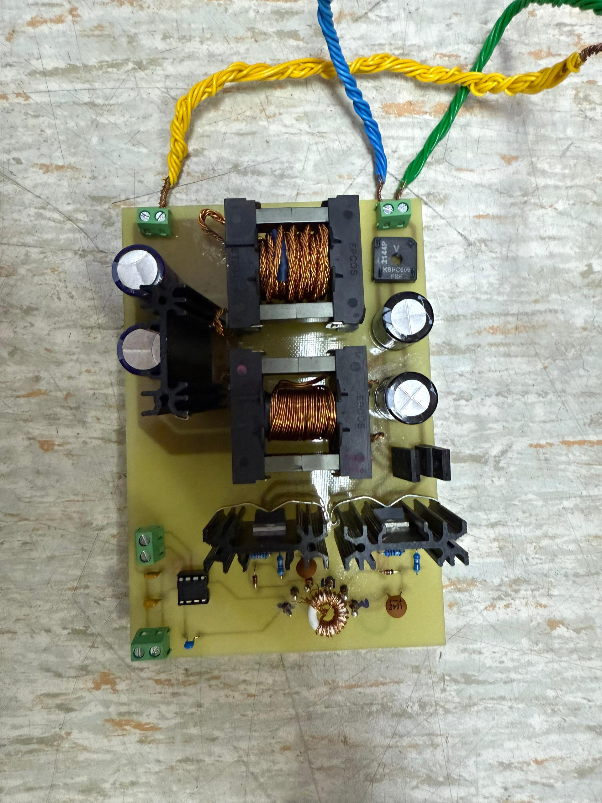
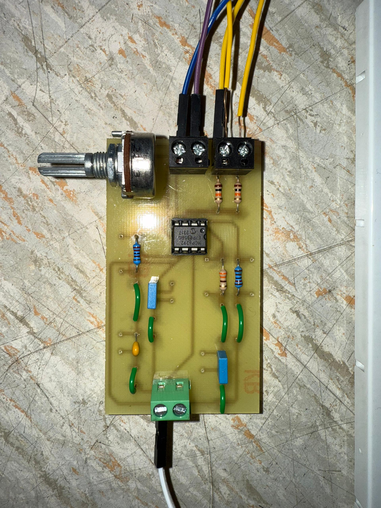
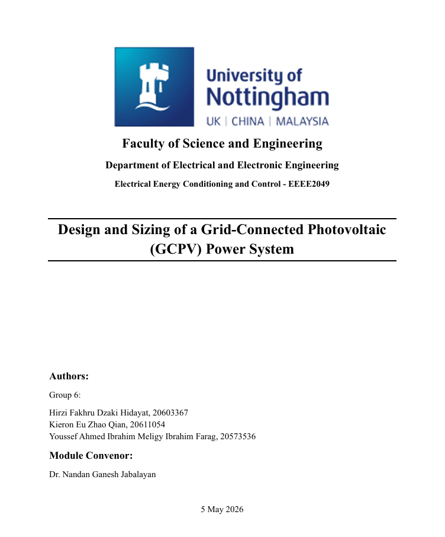
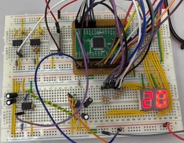
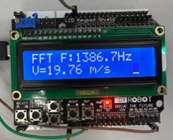

Electrical & Electronic Engineering Student
Hirzi Fakhru Dzaki Hidayat
2nd year MEng (Hons) Electrical and Electronic Engineering student at the University of Nottingham Malaysia, currently inside a 2x615 MW coal-fired plant in East Java learning how generators, transformers, and switchgear actually work.
About
I am completing my degree in Electrical and Electronic Engineering at the University of Nottingham Malaysia, with a growing focus on power systems, protection, and control. I'm currently on an internship at POMI, a power generation facility in East Java.
Malaysia is where I study — home base is Qatar, and I hold Indonesian citizenship. I'm looking to build my career in Qatar or Malaysia, with an eye on Europe if the right opportunity comes along, and I'm especially drawn to renewable energy.
- Location
- Probolinggo, ID. Semenyih, MY. Al Khor, QA
- Base
- Qatar
- Institution
- University of Nottingham Malaysia
- Programme
- MEng Electrical & Electronic Engineering
- Focus
- Power Systems · Protection · Control
Experience
Internship
POMI — Paiton Operations & Maintenance Indonesia
June 2026 – August 2026
Throughout my internship in POMI, I have learned about protection and power systems of electrical equipments (Generators, Transformers, Motors, Switchgears, etc.)
Currently working on a project to develop a Generator Differential (87G) Protection Relay software for plant engineeers.
Projects
Isolated Two Switch Forward Converter - University Project



Co-Designed and built a prototype of a closed-loop isolated two switch forward converter as part of Energy Conditioning Design Group Project.
Grid-Connected PV System Design - University Coursework

Sized and reported a PV system using ENERGYEA EA300P modules and a DEYE SUN-20K-G04 inverter as part of a group coursework project.
Used MATLAB to verify calculations of PV size and design.
Doppler Radar Speed Detection - University Project


Co-Designed and Built a prototype of a Doppler Radar Speed Detector as part of Electronic Systems Design Group Project.
Embedded system on an STM32 (comparator and ADC/FFT methods) communicating via RS485 to a Xilinx CoolRunner-II CPLD driving a 7-segment display.
Education
MEng (Hons) Electrical and Electronic Engineering
University of Nottingham Malaysia
Coursework spans machines, control theory, power electronics, communications, and embedded systems design.
Foundation in Engineering
University of Nottingham Malaysia
Skills
Protection & Plant Systems
- Protection Relays — GE G60 / 469 / 869 / 350 / T60
- Single-Line Diagram Reading & Drafting
- Switchgear & Transformers
Simulation & Analysis
- LTspice
- PLECS
- Proteus
- Simulink
PCB Design
- KiCAD
Programming
- C
- C++
- Python
- MATLAB
Microcontrollers & Embedded
- Arduino
- STM32
- Raspberry Pi
- Xilinx CoolRunner-II CPLD
Drawings & Design
- AutoCAD Electrical
- Solar PV System Sizing
Organizations
Indonesian Society Secretary - 2026/27
Responsible for organizing events and managing communications within the Indonesian Society.
Sports & Recreation
Beyond engineering, I'm passionate about staying active and competitive. Sports have shaped my discipline and resilience — qualities that translate directly into technical problem-solving.